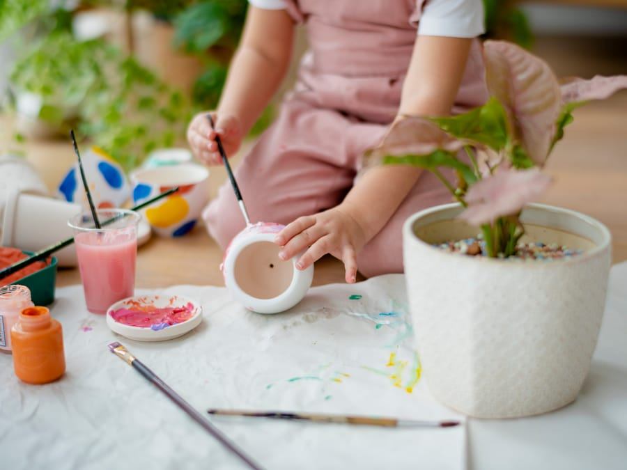

Wie wir begleiten
Alle Angebote auf einen Blick. Grün steht für Erwachsene, Orange für Kinder und Familien.
Unsere Angebote im Überblick

Erwachsene zu Hause
Eine ehrenamtliche Person begleitet Sie und Ihre Familie, zu Hause oder dort, wo Sie sich wohlfühlen.
Mehr erfahren →Kinder-/Familienbegleitung
Für Familien mit einem lebensbegrenzend erkrankten Kind: Entlastung, Begleitung, Zeit.
Zur Familienbegleitung →Trauerangebote
Gruppen und Einzelgespräche für Erwachsene, eine eigene Begleitung für Kinder in Trauer.
Mehr erfahren →Hospiz macht Schule
Eine Projektwoche für die dritte und vierte Klasse über die großen Lebensthemen.
Mehr erfahren →
Letzte-Hilfe-Kurse
Basiswissen, Orientierung und einfache Handgriffe für alle, die einen Menschen am Lebensende begleiten.
Zum Letzte-Hilfe-Kurs →Qualifizierung
Der Kurs für alle, die Sterbende ehrenamtlich begleiten möchten.
Zur Qualifizierung →Begleitung bei einer lebensverkürzenden Diagnose
Sterbebegleitung heißt für uns auch Lebensbegleitung. Eine ehrenamtliche Person begleitet einen Menschen und seine Familie, immer dieselbe, damit Vertrauen wachsen kann. Zu Hause oder dort, wo er sich wohlfühlt.
Wir nehmen die Wünsche des erkrankten Menschen ernst und achten seine Würde.
Wie eine Begleitung aussehen kann
- Da sein in der Zeit des Abschiednehmens
- Ansprechperson bei Ängsten und Sorgen
- Gespräche, Zuhören, miteinander Schweigen
- Entlastung, wenn Angehörige arbeiten oder Zeit für sich brauchen
- Einfache Handreichungen
- Informationen, zum Beispiel zur Patientenverfügung
Die Zeit danach
Ein Abschied verändert alles. Deshalb hört unsere Begleitung nicht auf, wenn ein Mensch gestorben ist.
Für Erwachsene
In offenen Gruppen treffen Sie Menschen, die Ähnliches erleben. Erfahrene Gesprächsleiterinnen begleiten die Gruppe. Ein Einzelgespräch ist ebenfalls möglich.
Kindertrauer
Damit Trauer für Kinder leichter wird.
Weiterlesen
Kindertrauer hat viele Gesichter. Ein Kinderherz wird schwer, wenn ein geliebter Mensch im Freundes- oder Familienkreis verstirbt. Kinder fühlen dabei vieles gleichzeitig: Wut, Angst, Traurigkeit. Auch Momente ablenkender Freude gehören dazu, damit die Trauer mal eine Pause haben kann.
Kinder trauern in Gefühlswellen. In einem Moment fließen bittere Tränen und im nächsten spielen sie wieder ganz versunken. Sie sind unglaublich wütend und dann wieder zurückgezogen. So schaffen sie sich Auszeiten von der Traurigkeit, damit sie mit ihren Gefühlen besser umgehen können.
Viele Kinder ziehen sich mit ihrer Trauer und Sorge zurück, um ihre Eltern nicht noch mehr zu belasten. Hier kann eine Unterstützung außerhalb der Familie helfen. Kinder brauchen offene Ohren und eine Begleitung, die ihnen durch ehrliche, altersgerechte Antworten Sicherheit und Halt gibt. Das gibt Raum für ihre Gefühle und die Möglichkeit, ihren ganz eigenen Weg durch die Trauer zu gehen.
Wie wir helfen
Wir begleiten Ihre Kinder behutsam und liebevoll auf ihrem Weg durch die Trauer. In einem geschützten und vertrauensvollen Raum dürfen Kinder so sein, wie sie sich gerade fühlen: ohne Druck, ohne Bewertung und in ihrem eigenen Tempo.
Mit spielerischen und kreativen Angeboten helfen wir Kindern, ihre Gefühle sichtbar zu machen und Worte für das zu finden, was sie bewegt. Malen, Basteln, Geschichten, Rituale oder gemeinsame Gespräche können dabei helfen, Trauer zu verstehen und zu verarbeiten.
Die Begegnung mit anderen Kindern, die Ähnliches erlebt haben, gibt ihnen das Gefühl, nicht allein zu sein. Das kann sehr entlastend sein.
Unser Ziel ist es, Kinder darin zu stärken, ihre eigenen Kräfte wiederzuentdecken, Erinnerungen zu bewahren und mit Hoffnung nach vorne zu schauen.
Auskunft zu allen Trauerangeboten im Büro unter 04421 745258.

Mit Kindern über Sterben und Trauer reden
In einer Projektwoche gehen mindestens fünf ausgebildete Ehrenamtliche gemeinsam in eine dritte oder vierte Klasse. In kleinen Gruppen sprechen die Kinder über Werden und Vergehen, Krankheit, Sterben, Tod, Traurigsein und Trösten.
Am letzten Tag zeigen die Kinder ihre Ergebnisse den Eltern bei einem Abschlussfest.
Wie die Woche abläuft
Wir arbeiten mit Geschichten, Bilderbüchern und Filmausschnitten. Es entstehen Collagen, Gefühle werden pantomimisch dargestellt, dazu kommen Fantasiereisen, Farben und Musik. Die Kinder lernen auch, wie andere Religionen sich das Leben nach dem Tod vorstellen.
Das Projekt läuft in Kooperation mit den Grundschulen der Region. Die Ehrenamtlichen sind nach dem Standard der Bundes-Hospiz-Akademie ausgebildet.